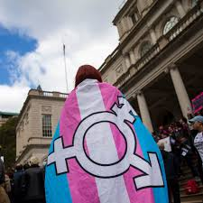

<main>
    <section>
        <h2>Investigación</h2>
        <article>
            <h3>Políticas del cuidado y Salud Mental.<br>Experiencias y demandas de colectivos trans-travesti en
                Argentina.
            </h3>
            <div>
                
                <p>Es un estudio exploratorio con metodología cualitativa, iniciado en 2019, en continuidad con el
                    Proyecto
                    Las opciones de vida trans: Trayectorias y espacios del cuidado. El proyecto propone trabajar en el
                    cruce de tres grandes campos: el del cuidado, el de la Salud Mental y el de las sexualidades
                    disidentes.
                    Habiendo constatado los altos grados de desigualación social de las personas trans-travestis en
                    Argentina, y los modos en que se la reproduce desde los campos académicos y profesionales por vía de
                    la
                    patologización –tantas veces denunciada por colectivos militantes y por los Estudios Queer- se
                    pregunta
                    por las demandas y requerimientos de los colectivos trans-travestis dirigidos al campo de la Salud
                    Mental hoy y por los grados y ámbitos en los que éstas alcanzan a estructurarse como requerimientos
                    relativamente formalizados. Asimismo, interroga las respuestas del campo de la Salud Mental a las
                    demandas aludidas y los modos en que se constituyen las políticas del cuidado hacia lxs integrantes
                    de
                    colectivos trans-travesti.
                    Objetivos generales 1: Explorar, describir y analizar las demandas y requerimientos en Salud Mental
                    expresadas en las experiencias de colectivos trans-travesti en Argentina; y 2) Caracterizar los
                    modos en
                    que se constituyen las políticas del cuidado en Salud Mental hacia los colectivos trans-travesti en
                    la
                    Argentina.
                    En su renovación (2022), agrega la experiencia de colectivos no binaries y la indagación de los
                    efectos
                    subjetivos de la pandemia COVID19. <br> <br>
                    <a href="https://1drv.ms/w/s!ApnNm76z1x1OgP8_vxl0Ra9iqHW0EQ?e=JXWwOW" target="_blank">Ver proyecto
                        completo</a>
                </p>
            </div>

        </article>
        <hr>
        <article>
            <h3>Políticas de cuidado y salud mental:<br>
                La importancia de la formación en la diversidad de género</h3>
            <div>
                <iframe width="100%" height="315" src="https://www.youtube.com/embed/AIFTfsL987k"
                    title="YouTube video player" frameborder="0"
                    allow="accelerometer; autoplay; clipboard-write; encrypted-media; gyroscope; picture-in-picture; web-share"
                    allowfullscreen></iframe>
                <!--  -->
            </div>
        </article>
    </section>
</main>